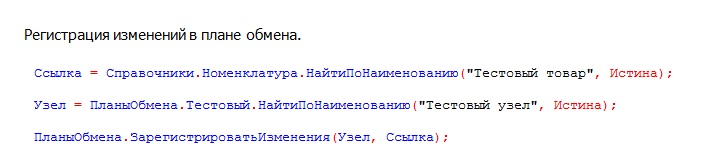
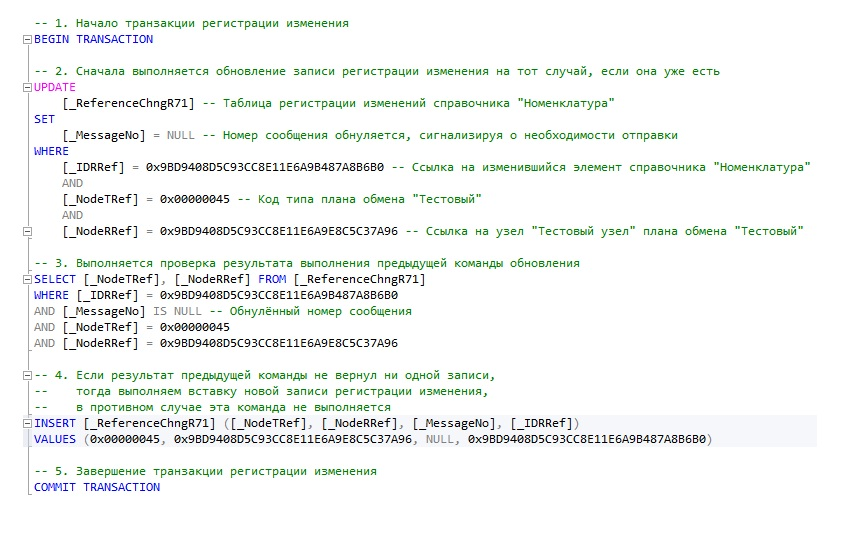

Независимо от того какую операцию с набором записей регистра сведений мы выполняем, всегда для каждой записи набора выполняется метод ЗарегистрироватьИзменения менеджера планов обмена.
Важно!
В случае редактирования значения измерения набора записей регистра сведений
(меняется ключ записи в СУБД), вызов метода регистрации изменений выполняется
дважды (!): один раз для "старой" или текущей записи, существующей в данный момент
времени в базе данных, а второй раз - для "новой" записи, находящейся до вызова метода
Записать набора записей регистра только в оперативной памяти программы
(новый ключ записи).
Небольшой нюанс существует для набора записей, у которого заполнен только отбор, то есть выполняется удаление записей набора регистра. В таком случае метод регистрации изменений выполняется для всех записей регистра сведений, которые будут получены при помощи метода Прочитать для такого набора записей, учитывая указанный отбор.
Ниже приведены примеры кода 1С и соответствующий ему код SQL для Microsoft SQL Server, который выполняет эквивалентную операцию регистрации изменений, но только для ссылочного объекта.


На уровне СУБД вызов выше указанного метода выполняется в транзакции с уровнем изоляции
READ COMMITTED. Далее выполняется команда UPDATE, которая пытается в таблице регистрации
изменений плана обмена для соответствующего объекта метаданных и его записей установить
полю _MessageNo значение NULL. Это маркировка записей регистрации изменений
на выгрузку — своеобразный флаг.
Далее платформа 1С:Предприятие 8 проверяет, что искомые записи действительно присутствуют
в таблице регистрации изменений. Для это выполняется команда SELECT с отбором по
соответствующим измерениям и полю _MessageNo равным значению NULL.
Если количество записей не совпало с искомым, то выполняется команда INSERT с тем,
чтобы изменения для соответствующих записей были всё-таки зарегистрированы.
В любом случае, запросы UPDATE и SELECT будут выполнены всегда.
Для наборов записей выполняется точно такой же код, но только вместо поля _IDRRef используются поля измерений регистра сведений, которые имеют установленное свойство Основной отбор для соответствующего объекта метаданных в конфигураторе.
Для регистров сведений, подчинённых регистратору, используется только поле Регистратор (_RecorderTRef и _RecorderRRef) без каких либо измерений, а для периодического регистра сведений — поле Период (_Period) и измерения с основным отбором.
Подробнее можно ознакомиться с механизмом регистрации изменений 1С:Предприятие 8 в статье: Планы обмена 1С (infostart.ru)